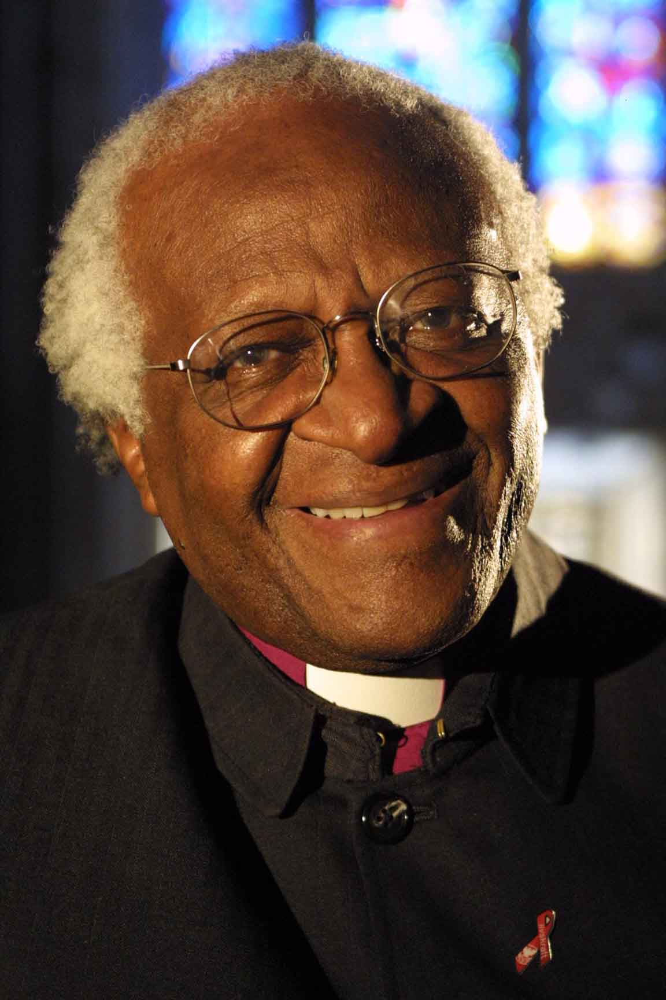
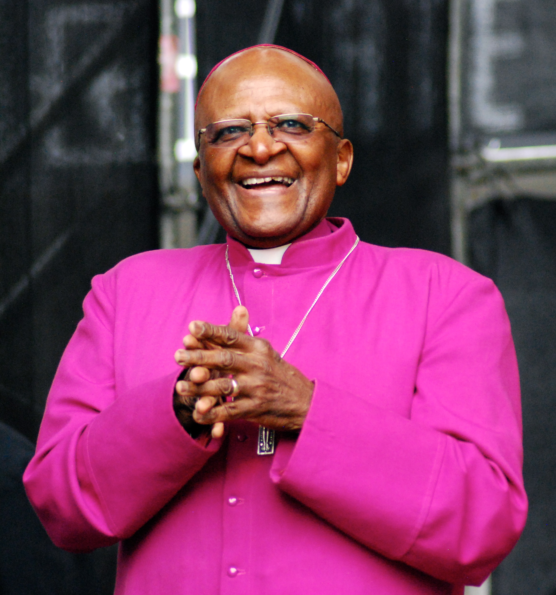
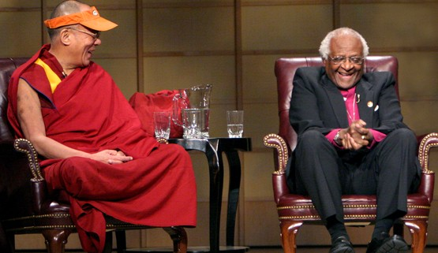

Bishop Desmond Mpilo Tutu

By Benny Gool - Transferred from en.wikipedia to Commons., Public Domain, Link.

By Carey Linde - who took the photo in Vancouver, Canada, 2004 - From the private collection of my friend, Carey Linde, CC BY-SA 3.0, Link
{kind=link}

By Kirsten Opalinski - Own work CC BY-SA 3.0, Link.
{kind=link}
The Bishop's Timeline:
- 7 October 1931: Date of birth.
- 1955: He married Nomalizo Leah Shenxane and together they had four children.
- 1960: He was ordained as an Anglican priest.
- 1962: The Bishop moved to the United Kingdom to study theology at King’s College.
- 1966: This year he returned to Africa to teach at the Federal Theological Seminary in South Africa and then the University of Botswana, Lesotho and Swaziland.
- 1972: He then became Theological Education Fund’s director for Africa.
- 1975: Bishop Tutu served as dean of St Mary’s Cathedral in Johannesburg and then as Bishop of Lesotho.
- 1978: He became the General-secretary of the South African Council of Churches.
- 1985: He became the first black African Bishop of Johannesburg.
- 1986: During this year he became the first black African Archbishop of Cape Town and he also oversaw the introduction of female priests. He also became the president of the all African conference of Churches.
- 1990: He helped Nelson Mandela lead negotiations to end apartheid and introduce multi-racial democracy.
- 1994-2010: Bishop Desmond Tutu was selected to chair the Truth and Reconciliation Commission. During this time he also campaigned for gay rights and his disagreement with the Iraq war.
- 2010: retired from social life.
- 26 December 2021: He passed away.